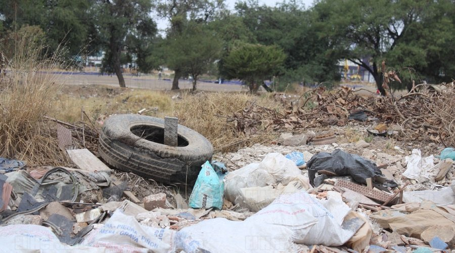

Problematica de los Neumaticos Fuera de Uso (NFU)

Los neumáticos son un auténtico atentado contra el entorno. Su material (caucho) y su masiva fabricación los convierten en un problema medio ambiental de primer orden en todo el mundo, pues no siempre se reutilizan, aunque también es cierto que su reciclaje cada vez es más común e imaginativo.
Debido al auge automotriz, es cada día mayor la cantidad de Neumáticos Fuera de Uso (NFU) que se genera a nivel mundial. La acumulación de estos en botaderos o llenaderos de basura de manera descontrolada puede causar serios daños al medio ambiente ya la salud pública. Actualmente, las cifras emitidas por Asociación de Fabricantes de cauchos, relacionadas a la mala gestión de en el desperdicio de los NFU son alarmantes. Un neumático pasa a estar fuera de uso cuando alcanza su vida útil y debe ser sustituido por otro.
Impacto Ambiental

El vehículo es hoy en día, el medio de transporte mas utilizado por millones de persones alrededor del mundo; éste satisface las necesidades de sus usuarios pero al mismo tiempo es una fuente de contaminación durante su fabricación, utilización y al estar fuera de uso. La fase utilización es la más contaminante debido a que el correcto funcionamiento del vehículo requiere mantenimientos periódicos en los cuales se desecha diferentes tipos de contaminantes (líquidos: aceites usados, refrigerante, liquido de frenos, ácido de batería; sólidos: filtros, forros de freno, neumáticos, etc. y gaseosos: emisiones del motor, tanque de combustible, batería, etc.) Los neumáticos usados no son biodegradables (no se descomponen como lo hace la basura orgánica) ni tampoco se puede extraer nuevamente las materias primas para la fabricación de un nuevo neumático, debido al proceso de vulcanización (irreversible) al que esta sometido durante la fabricación dando como resultado un problema medio ambiental. El problema radica en "buscar opciones de reutilización para los neumáticos usados" por esta razón se pretende en este documento dar una visión de esta problemática en el Cantón Cuenca, y plantear algunas propuestas.
Deterio Ambiental
El impacto ambiental y daños a la salud al estar las llantas mal dispuestas en la vía
pública, en arroyos, en los baldíos y en azoteas de las casas, son provocados ya que
son el lugar ideal para la creación y reproducción de flora y fauna nociva.

Y una vez que llueve, las llantas son el principal lugar donde el mosquito portador del
dengue se reproduce, a veces son quemadas y también provocan un grave daño al aire.
por lo regular las llantas se desechan en lugares no ideales para su estancia, como
por ejemplo que vayan al relleno sanitario en lugares no controlados, “esto genera
mucha contaminación porque además tarda mucho en degradarse una llanta”.
Así pues, cuando invade cuerpos de agua también generan gran contaminación porque
contribuye a bloqueos del agua que posteriormente genera inundaciones y en otro
sentido, al ser quemadas, por su composición son un gran factor de deterioro ambiental
ya que generan gases tóxicos que directamente afectan la calidad del aire.
Residuos Solidos Organicos (RSU)
En México se generan diariamente 102,895.00 toneladas de residuos, de los cuales se
recolectan 83.93% y se disponen en sitios de disposición final 78.54%, reciclando
únicamente el 9.63% de los residuos generados.
En el país, sigue predominando el manejo básico de los RSU que consiste en recolectar
y disponer los residuos en rellenos sanitarios, desaprovechando aquellos residuos que
son susceptibles a reincorporarse al sistema productivo, lo que disminuiría la demanda
y explotación de nuevos recursos, a diferencia de países como Suiza, Países Bajos,
Alemania, Bélgica, Suecia, Austria y Dinamarca; donde la disposición final de los
residuos es de menos del 5% en rellenos sanitarios.
 Artículo 10 de la LGPGIR establece que los municipios tienen a su cargo las funciones
de manejo integral de residuos sólidos urbanos, que consisten en la recolección,
traslado, tratamiento, y su disposición final. La realidad de los municipios es que
se enfrentan a diversas circunstancias que en muchos casos se escapan de sus
capacidades técnicas y financieras, debido a la dificultad de contar con personal
capacitado, de adquirir o comprometer recursos financieros que den certeza a las
inversiones del sector privado y por el corto tiempo de las administraciones
municipales, lo que conlleva a la ruptura de la curva de aprendizaje y por ende a una
falta de continuidad en las acciones y proyectos que garanticen una gestión integral
de los residuos sólidos urbanos.
Artículo 10 de la LGPGIR establece que los municipios tienen a su cargo las funciones
de manejo integral de residuos sólidos urbanos, que consisten en la recolección,
traslado, tratamiento, y su disposición final. La realidad de los municipios es que
se enfrentan a diversas circunstancias que en muchos casos se escapan de sus
capacidades técnicas y financieras, debido a la dificultad de contar con personal
capacitado, de adquirir o comprometer recursos financieros que den certeza a las
inversiones del sector privado y por el corto tiempo de las administraciones
municipales, lo que conlleva a la ruptura de la curva de aprendizaje y por ende a una
falta de continuidad en las acciones y proyectos que garanticen una gestión integral
de los residuos sólidos urbanos.
La SEMARNAT promueve, a través de planes, programas y del marco regulatorio, que el
manejo de los residuos sólidos urbanos se realice bajo esquemas de gestión integral,
que incluyen la prevención y reducción de su generación, su valorización económica y
su disposición de manera adecuada.
Enlaces externos